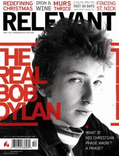

Bob DylanOn the cover|  | December 2007
Relevant | Media coverage:- Dec 1965 in The Intercollegian "Bob Dylan: 20th Century Prophet", by Stephen C. Rose
- Mar 1966 in Motive "Beyond Beatles", by Robert F. Palmer, Jr.
- 24 Aug 1967 in Christian Advocate "Prophets With Guitars", by Lincoln B. Justice
- Dec 1967 in International Journal of Religious Education "Grooving on Prophecy", by Stanley J Roland
- 3 Apr 1969 in Christian Advocate "The Top 40: A Conscience For the Young", by David Lehmberg
- Apr 1971 in Eternity "O, What A Fantastic New Day For Christian Music", by William J Peterson
- Jun 1971 in Home Missions "Prophets In God-Rock", by Mary Violet Burns
- 3 Dec 1976 in Christianity Today "Refiner's Fire: Still Blowin' In The Wind", by Daniel J. Evearitt
- Aug 1979 in The Wittenburg Door "The Gospel According To Dylan", by Larry Thomas
- Dec 1979 in CCM "Bob Dylan's Controversial Concerts", by John W. Styll
- Jan 1980 in Eternity "Mars Hill: Musicians Board the Slow Train", by Sharon Gallagher
- 4 Jan 1980 in Christianity Today "Refiner's Fire: Bob Dylan Finds His Source", by Noel Paul Stookey
- 4 Jan 1980 in Christianity Today "Refiner's Fire: Not Buying Into the Subculture", by David Singer
- Aug 1980 in CCM "Bob Dylan"
- Aug 1980 in Christian Life "The Miracle of Bob Dylan", by Michael Bettino
- Sep 1980 in Christian Herald "Bob Dylan's Journey To Heaven's Door", by Sharon Gallagher
- Oct 1980 in Campus Life "Impressions: Bob Dylan", by Gord Wilson
- Oct 1980 in Group "The World Times: Baez Blasts Dylan"
- Dec 1980 in CCM "In Concert: Dylan Retrospective Unfulfilled... Almost"
- Feb 1981 in CCM "Talent: Dylan Tells Story of Christian Conversion", by David G. Spillman
- Aug 1981 in CCM "Bob Dylan"
- Jan 1982 in Campus Life "Shout of Love", by Jim Long
- 6 Jan 1982 in The Lutheran "Sight and Sound: On this Rock they Build a Witness", by Steve Rabey
- Jul 1982 in Campus Life "Impressions: Bob Dylan"
- Oct 1983 in Charisma "News & Views: What About The Bob Dylan Rumors?", by Audrey T. Hingley, Richard Nakamoto
- Jan 1984 in CCM "Bob Dylan"
- Jan 1984 in Campus Life "Expressions: Dylan: In The Faith With Infidels?", by Jim Long
- 13 Jan 1984 in Christianity Today "News: Has Born-again Bob Dylan Returned to Judaism?"
- Oct 1985 in CCM "Dylan: Prophet or Backslider?", by Don Williams
- Feb 1986 in Campus Life "On Record: James Taylor, David Crosby, Bob Dylan", by Harold Smith
- Feb 1986 in CCM "Notebook: Bob on Bob", by Steve Rabey
- Fall 1988 in Harvest Rock Syndicate "In Concert: The Municipal Opera, St. Louis, MO", by Steve Greenfield
- Nov 1989 in Campus Life "Values In Media: Oh Mercy", by Jim Long
- Jun 1991 in Sojourners "Under Review - Music: Times They Are A-Changin'", by Colbert S. Cartwright
- Jul 1991 in The Other Side "Editor's Choice: Bob Dylan's Bootlegs", by Doug Davidson
- 1999 in Radix "Radix Retrospective"
- May 2002 in HM "Concert Review: Austin, TX", by Doug Van Pelt
- Jul 2003 in Sojourners "Altar Call", by Kimberly Burge
- Apr 2007 in CCM "History Makers: Moments that Shaped CCM: Gotta Serve Somebody", by John W. Styll
- Apr 2007 in CCM "List-O-Rama: End of the Line: 5 Artists Singin' About The Return of Jesus", by Chris Well
- Sep 2007 in Prism "Music Notes: Redeeming Dylan", by J D Buhl
- Dec 2007 in Relevant "The Real Bob Dylan", by Scott M. Marshall
- Jul 2014 in Relevant "The Drop: The Dylan/Cash Comeback"
- Jan 2017 in Sojourners "Eyes & Ears: A Nobel Prize for the Masses?", by Danny Duncan Collum
Albums & reviews:1964: Another Side of Bob Dylan1965: Bringing It All Back Home1967: John Wesley Harding1969: Great White Wonder1970: New Morning1975: Blood on the Tracks1975: The Basement Tapes1979: Slow Train Coming1980: Saved1981: Shot of Love1983: Infidels1985: Empire Burlesque1985: Biograph1986: Knocked Out Loaded1988: Down in the Groove1989: Oh Mercy1989: Bob Dylan & The Dead with The Grateful Dead1990: Under the Red Sky1991: The Bootleg Series Volumes One to Three: (Rare & Unreleased) 1961 - 19911992: Good As I Been to You1993: World Gone Wrong1998: Bootleg Volume Four: Bob Dylan Live 1966, The "Royal Albert Hall" Concert2001: Love and Theft2005: The Bootleg Series Volume Seven: No Direction Home: The Soundtrack2009: Christmas in the Heart2010: Bootleg Volume Nine: The Witmark Demos: 1962-19642012: Tempest Award Summary (Nominations / Wins)Dove Awards1982 Dove Awards- Album by a Secular Artist: Shot of Love
Books about Bob Dylan- "Bob Dylan" in The Encyclopedia of Contemporary Christian Music (Mark Allan Powell, 2002)
- "Times They Are A-Changing" in The Rock Cries Out (Steve Stockman, 2004)
|